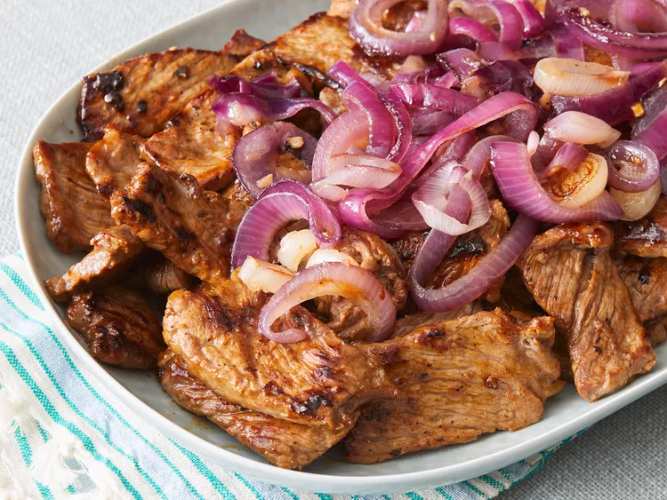
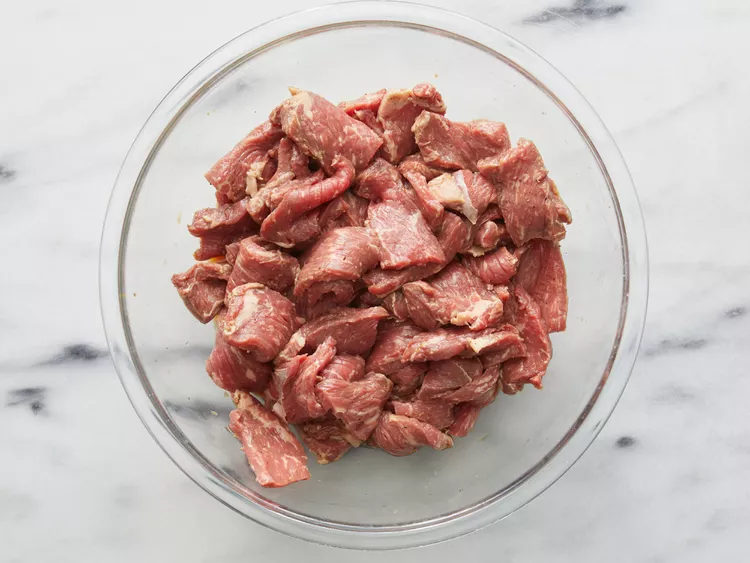
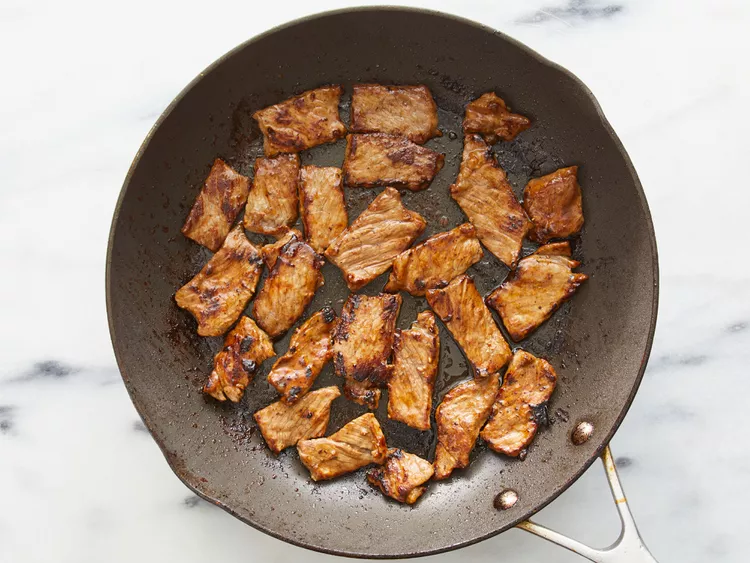
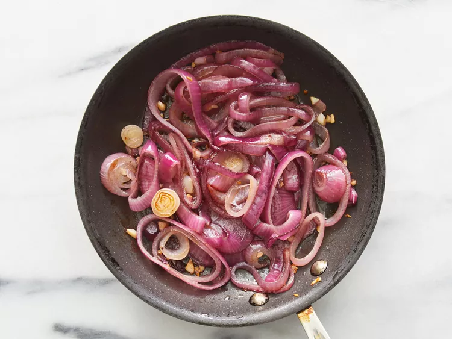

This beef steak is a very easy recipe to make. A tender cut of beef is sliced thin, then marinated with lemon juice and soy sauce for at least an hour.
Place sliced beef in a large bowl. Whisk together lemon juice, soy sauce, sugar, salt, and pepper in a small bowl; pour over beef and toss to coat. Stir in cornstarch. Cover and refrigerate for 1 hour to overnight.

Heat vegetable oil in a large skillet over medium heat.
Remove beef slices from marinade, shaking to remove any excess liquid. Discard marinade.

Working in batches, fry beef slices in hot oil until they start to firm and are reddish-pink and juicy in the center, 2 to 4 minutes per side. Transfer beef slices to a serving platter.

Heat olive oil in a small skillet over medium heat. Cook and stir onion and garlic in hot oil until onion is golden brown, 5 to 7 minutes; spoon over beef slices.